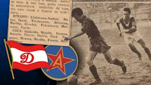

Clubul Dinamo București a fost fondat în 1948, prin reorganizări ample ale sportului românesc. Încă de la început, culorile roșu și alb au devenit parte a identității vizuale a clubului.
Dinamo s-a remarcat rapid ca una dintre cele mai competitive formații ale Diviziei A, atrăgând atenția prin stilul combativ și prin aportul jucătorilor convocați constant la echipa națională.